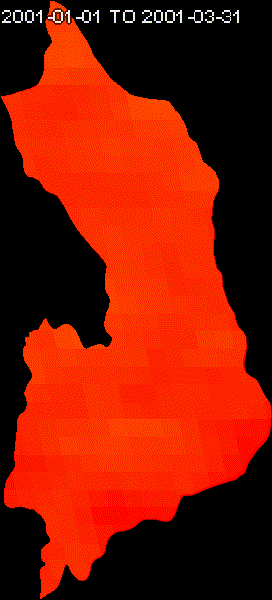
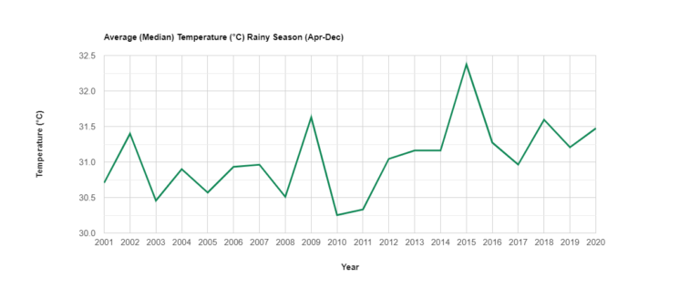
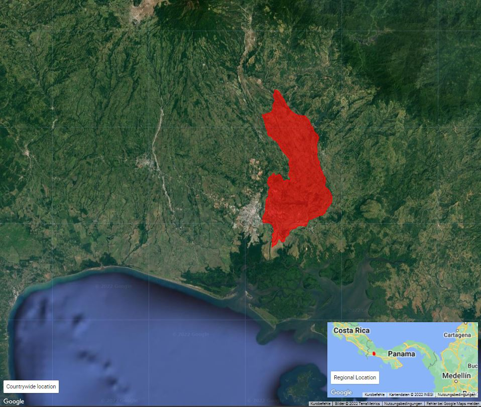
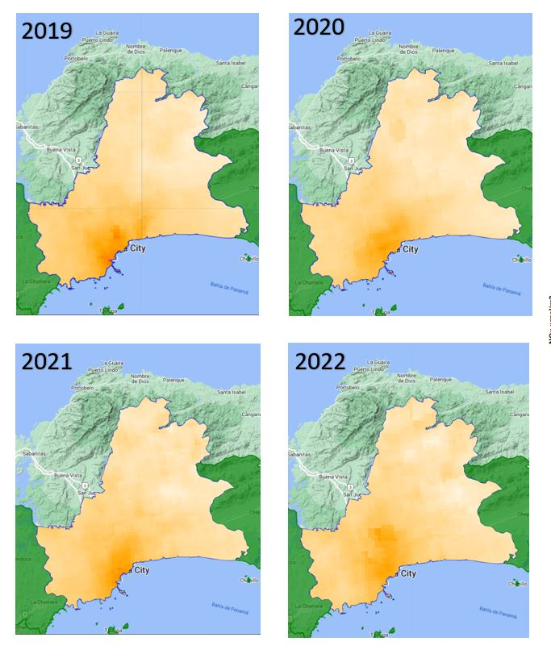

JavaScript(GEE API)
Welcome to the Google Earth Engine section of this documentation. This section is dedicated to providing a solution-based approach to various geospatial analytics problems, complete with code explanations and illustrative outputs. The code presented here is based on the concepts and functionalities offered by the Google Earth Engine (GEE) JavaScript API.
If you are unfamiliar with the GEE JavaScript API or need further information on its usage and capabilities, you can refer to the official Google Earth Engine JavaScript API documentation. This documentation serves as a valuable resource for understanding the core functionalities of the GEE platform and its JavaScript API, which form the foundation for the solutions and projects presented in this section.
Feel free to explore the projects and code examples provided here to gain insights into how GEE can be leveraged for various geospatial analysis tasks.
Project Portfolio
🎥 Time Lapse (Landsat Images) 🌍
Time lapse animations, are an interesting tool used to visualize changes on the earth surface over time. The following animation is created by the code provided, and shows the changes over a 20 years period of time by the construction of a river dam in the province of Chiriqui, Republic of Panamá.

Time Lapse of Landsat Images from the Google Earth Engine platform.
Code
| time_lapse.js | |
|---|---|
1 2 3 4 5 6 7 8 9 10 11 12 13 14 15 16 17 18 19 20 21 22 23 24 25 26 27 28 29 30 31 32 33 34 35 36 37 38 39 40 41 42 43 44 45 46 47 48 49 50 51 52 53 54 55 56 57 58 59 60 61 62 63 64 65 66 67 68 69 70 71 72 73 74 75 76 77 78 79 80 81 82 83 84 85 86 87 88 89 90 91 92 93 94 95 96 97 98 99 100 101 102 103 104 105 106 107 108 109 110 111 112 113 114 115 116 117 118 119 120 121 122 123 124 125 126 127 128 129 130 131 132 133 134 135 136 137 138 139 140 141 142 143 144 145 146 147 148 149 150 151 152 153 154 155 156 157 158 159 160 161 162 163 164 165 166 167 168 169 170 171 172 173 174 175 176 177 178 179 180 181 182 183 184 185 186 187 188 189 190 191 192 193 194 195 196 197 198 199 200 201 202 203 204 205 206 207 208 209 210 211 212 213 214 215 216 217 218 219 220 221 222 223 224 225 226 227 228 229 230 231 232 233 234 235 236 237 238 239 240 241 242 243 244 245 246 247 248 249 250 251 252 253 254 255 256 257 258 259 260 261 262 263 264 265 266 267 268 269 270 271 272 273 274 275 276 277 278 279 280 281 282 283 284 285 286 287 288 289 290 291 292 293 294 295 296 297 298 299 300 301 302 303 304 305 306 307 308 309 310 311 312 | |
🌐 Measuring land surface temperature with MODIS data 🌡️🛰️
Script Description: This script is designed to analyze temperature changes within the Cochea River watershed using the Google Earth Engine (GEE) platform and MODIS (Moderate Resolution Imaging Spectroradiometer) datasets. Specifically, it focuses on measuring temperature variations during both the rainy and dry seasons over a 20-year period. The primary objectives of this script are to generate an animated GIF, a time series graph depicting the Average Median Temperature (°C) as recorded by the MODIS sensor, and a regional overview of the study area.
Script Workflow: 1. Data Acquisition: The script begins by accessing MODIS datasets, which provide reliable temperature data with global coverage and high temporal resolution.
-
Temporal Selection: It then filters the MODIS data to isolate the specific time periods corresponding to the dry and wet seasons over the 20-year span.
-
Spatial Region Selection: The script defines the study area within the Cochea River watershed, ensuring that the analysis is limited to the relevant geographic scope.
-
Temperature Computation: Using the MODIS temperature data, the script calculates the Average Median Temperature (°C) for each pixel within the study area, both for the dry and wet seasons.
-
Visualization Generation:
-
Animated GIF: The script generates an animated GIF, showcasing the temporal evolution of temperature changes over the 20-year period. Each frame of the GIF represents a specific time step, offering a dynamic visual representation of temperature variations.
Time Lapse of MODIS Land Surface Temperature (Dry Season) from the Google Earth Engine platform.

Time Lapse of MODIS Land Surface Temperature (Rainy Season) from the Google Earth Engine platform.
-
Time Series Graph: Additionally, the script creates a time series graph, displaying the Average Median Temperature (°C) as a function of time. This graph provides a clear overview of temperature trends during the dry and wet seasons.

Average median temperature for the Dry Season measured from MODIS time series.

Average median temperature for the Wet Season measured from MODIS time series.
-
Regional View: Lastly, the script produces a regional view of the study area, allowing users to geospatially contextualize the temperature changes observed in the Cochea River watershed.

Regional view of the study area.
By following this technical script, users can conduct a rigorous analysis of temperature fluctuations within the specified region and timeframes, enabling in-depth insights into environmental changes over the 20-year period.
Code
| land_surface_MODIS.js | |
|---|---|
1 2 3 4 5 6 7 8 9 10 11 12 13 14 15 16 17 18 19 20 21 22 23 24 25 26 27 28 29 30 31 32 33 34 35 36 37 38 39 40 41 42 43 44 45 46 47 48 49 50 51 52 53 54 55 56 57 58 59 60 61 62 63 64 65 66 67 68 69 70 71 72 73 74 75 76 77 78 79 80 81 82 83 84 85 86 87 88 89 90 91 92 93 94 95 96 97 98 99 100 101 102 103 104 105 106 107 108 109 110 111 112 113 114 115 116 117 118 119 120 121 122 123 124 125 126 127 128 129 130 131 132 133 134 135 136 137 138 139 140 141 142 143 144 145 146 147 148 149 150 151 152 153 154 155 156 157 158 159 160 161 162 163 164 165 166 167 168 169 170 171 172 173 174 175 176 177 178 179 180 181 182 183 184 185 186 187 188 189 190 191 192 193 194 195 196 197 198 199 200 201 202 203 204 205 206 207 208 209 210 211 212 213 214 215 216 217 218 219 220 221 222 223 224 225 226 227 | |
🌍 Time Lapse (RADAR Images) - Panama Canal 🛶 💧
Objective
To commemorate World Water Day, this analysis explores the significance of freshwater sources within the Panama Canal Zone. Our primary goal is to gain insights into the role of these water bodies in sustaining the Panama Canal and supporting the surrounding ecosystems and communities.

Time Series of Radar (Sentinel-1) Imagery. Year 2022, Panama Canal Zone.
Methodology
In this analysis, we utilize Sentinel-1 imagery due to its exceptional ability to provide clear, all-weather views of the Earth's surface. Our methodology can be broken down into the following key steps:
-
Filtering Area of Interest (AOI): We narrow our focus to specific regions, including the Panama Province and select districts.
-
Date Range Selection: Images from 2022 are chosen for analysis.
-
Image Clipping and Masking: We create buffered extents and apply masks to Sentinel-1 images.
-
Image Collection and Filtering: We gather images with precise properties, including polarization, resolution, and instrument mode.
-
Backscatter Analysis: Backscatter graphs for VH and VV bands are generated to monitor changes over time.
-
Image Visualization: We visualize images and create RGB representations for animations.
Code
| sentinel_1_time_lapse.js | |
|---|---|
1 2 3 4 5 6 7 8 9 10 11 12 13 14 15 16 17 18 19 20 21 22 23 24 25 26 27 28 29 30 31 32 33 34 35 36 37 38 39 40 41 42 43 44 45 46 47 48 49 50 51 52 53 54 55 56 57 58 59 60 61 62 63 64 65 66 67 68 69 70 71 72 73 74 75 76 77 78 79 80 81 82 83 84 85 86 87 88 89 90 91 92 93 94 95 96 97 98 99 100 101 102 103 104 105 106 107 108 109 110 111 112 113 114 115 116 117 118 119 120 121 122 123 124 125 126 127 128 129 130 131 132 133 134 135 136 137 | |
💨 Monitoring Nitrogen Dioxide in Panama City with Sentinel-5P Imagery 🏙️
Objective:
The objective of this analysis is to create composites of Sentinel-5P imagery to measure nitrogen dioxide (NO2) levels in the city of Panama City during the COVID-19 lockdown period. This analysis aims to provide insights into the variations in tropospheric NO2 density over time, particularly during the lockdown period, and visualize these changes using composites and a time-lapse GIF. The analysis also includes the creation of a chart to represent the mean NO2 levels over the selected area of interest.
Steps:
-
Filtering Area of Interest (AOI): The analysis starts by defining the Area of Interest (AOI) using geographical boundaries data. The AOI encompasses specific districts within the Panama Province, including Arraiján, Panamá, and San Miguelito. The map is centered on the coordinates of this AOI.
-
Setting Visualization Parameters: Visualization parameters for the NO2 density are defined, including the minimum, maximum values, and color palette to be used for rendering the imagery.
-
Setting the Date Range: The analysis specifies the start and end dates for image collection. In this case, the date range spans from January 1, 2020, to December 31, 2022.
-
Creating Image Composites: The script creates monthly image composites of Sentinel-5P tropospheric NO2 density within the defined AOI. These composites are generated for each month of each year in the specified date range.
-
Renaming Images: The image composites are renamed to include the year and month information in their system index.
-
Creating a Time-Lapse GIF: The script combines the renamed image composites into a time-lapse GIF. It annotates each frame of the GIF with a timestamp to indicate the year and month of the data. The GIF visually shows the changes in tropospheric NO2 density over time within the AOI.
-
Creating a Chart: A chart is generated to display the mean tropospheric NO2 column number density for the selected AOI over time. This chart provides a quantitative representation of the NO2 levels during the analysis period.

Tropospheric NO2 column – Chart
-
Displaying Yearly Composites: Finally, yearly composites for 2019, 2020, 2021, and 2022 are added to the map, allowing for a comparison of NO2 levels across these years.

Nitrogen Dioxide tropospheric column – Panama City – 2019-2022
This analysis provides a comprehensive overview of tropospheric NO2 density changes in Panama City, with a focus on the COVID-19 lockdown period. The time-lapse GIF and chart enhance the visualization and understanding of these changes over time.
Code
| nitrogen_dioxide_monitoring.js | |
|---|---|
1 2 3 4 5 6 7 8 9 10 11 12 13 14 15 16 17 18 19 20 21 22 23 24 25 26 27 28 29 30 31 32 33 34 35 36 37 38 39 40 41 42 43 44 45 46 47 48 49 50 51 52 53 54 55 56 57 58 59 60 61 62 63 64 65 66 67 68 69 70 71 72 73 74 75 76 77 78 79 80 81 82 83 84 85 86 87 88 89 90 91 92 93 94 95 96 97 98 99 100 101 102 103 104 105 106 107 108 109 110 111 112 113 114 115 116 117 118 119 120 121 122 123 124 125 126 127 128 129 130 131 132 133 134 135 136 137 138 139 140 141 142 143 144 145 146 | |


 Google Earth Engine App - Minera Panama
Google Earth Engine App - Minera Panama 

This project utilizes Earth Engine, a cloud-based platform for geospatial analysis, to process Landsat 7 satellite imagery to create True Color COmposites in the region of Petaquilla, Republic of Panama. The script focuses on an area within Donoso District, which is part of the Mesoamerican Biological Corridor.
This workflow automates the creation, visualization, and export of median composites of Landsat 7 images for monitoring the Petaquilla Minera Panama area over time, including the creation of an annotated GIF animation.
Description of Functions and Steps
Functions
applyScaleFactors(image):
Adjusts optical and thermal bands of an image using specific scaling factors for accurate representation.
maskL7srClouds(image):
Masks out clouds and cloud shadows in Landsat 7 images by using bitwise operations on QA_PIXEL data.
blendImage(image):
Applies a focal mean filter to smooth the image and blends it with the original image to reduce noise.
median_yearly_landsat_7(start, end):
Creates a median composite of Landsat 7 images for a specified date range, filtered by the AOI and cloud cover threshold.
Steps for the Application
-
Define Area of Interest (AOI):
-
Set the AOI to the geometry variable.
-
Create a buffered extent around the AOI for analysis.
-
Set Cloud Cover Threshold: Define the maximum acceptable cloud cover for images (set to 100%).
-
Prepare Date Ranges: Define periods for data collection and segment years into intervals. Concatenate years with periods to generate specific date ranges.
-
Generate Composites: For each date range, create median composites of Landsat 7 images using the median_yearly_landsat_7 function. Apply cloud masking and image blending to enhance the quality of the composites. Clip the composites to the AOI and add them to the map.
-
Export Composites: Export the generated composites to Google Drive as GeoTIFF files with descriptive names.
-
Annotate Images: Use the text package to annotate the composites with labels.
-
Create a collection of annotated images.
-
Create GIF Animation:
Define GIF parameters, including region, dimensions, and frame rate. Generate and display a GIF animation of the annotated image collection.
Code
| petaquilla_mosaics.js | |
|---|---|
1 2 3 4 5 6 7 8 9 10 11 12 13 14 15 16 17 18 19 20 21 22 23 24 25 26 27 28 29 30 31 32 33 34 35 36 37 38 39 40 41 42 43 44 45 46 47 48 49 50 51 52 53 54 55 56 57 58 59 60 61 62 63 64 65 66 67 68 69 70 71 72 73 74 75 76 77 78 79 80 81 82 83 84 85 86 87 88 89 90 91 92 93 94 95 96 97 98 99 100 101 102 103 104 105 106 107 108 109 110 111 112 113 114 115 116 117 118 119 120 121 122 123 124 125 126 127 128 129 130 131 132 133 134 135 136 137 138 139 140 141 142 143 144 145 146 147 148 149 150 151 152 153 154 155 156 157 158 159 160 161 162 163 164 165 166 167 168 169 170 171 172 173 174 175 176 177 178 179 180 181 182 183 184 185 186 187 188 189 190 191 192 | |
Google Earth Engine App